Day · porcelain · 16 / 24 / 32 / 48 / 96
mark 16
24
32
48
96
Compact · the 16px drawing
16
24
32
glyph 32
mono 32
icon 48
Lockups
lockup · cap 30
stacked
Wordmark · minimum 14
Night · wine · 16 / 24 / 32 / 48 / 96
mark 16
24
32
48
96
Compact · reverse

16
24
32
icon 48
Lockups
lockup · reverse
stacked
Wordmark · reverse